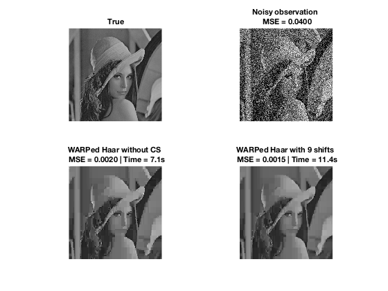

rng(0);
load('lena_data.mat');
obs_true = double(lena) ./ 255;
MSE = @(x) mean(mean((x - obs_true).^2, 1));
sigma = 0.2;
obs_raw = obs_true + randn(size(obs_true, 1)) .* sigma;
obs = obs_raw(:);
dimension = size(obs_raw)';
tic
hyper0 = hyper_default(obs(:), dimension);
t1 = toc;
BMA_no_cs = treeFit(obs, dimension, hyper0, 0);
BMA_no_cs = reshape(BMA_no_cs, dimension');
t2 = toc;
step = 1;
BMA_cs = treeFit(obs, dimension, hyper0, step);
BMA_cs = reshape(BMA_cs, dimension');
t3 = toc;
figure;
subplot(2, 2, 1)
imshow(obs_true); title('True');
subplot(2, 2, 2)
imshow(obs_raw);
title(sprintf('Noisy observation \n MSE = %.4f', MSE(obs_raw)));
subplot(2, 2, 3)
imshow(BMA_no_cs);
title(sprintf('WARPed Haar without CS \n MSE = %.4f | Time = %.1fs', MSE(BMA_no_cs), t2));
subplot(2, 2, 4)
imshow(BMA_cs);
title(sprintf('WARPed Haar with %d shifts \n MSE = %.4f | Time = %.1fs', (2 * step + 1)^2, MSE(BMA_cs), t3 - t2 + t1));
